What is software engineering? It is a branch of systems engineering concerned with the development of large and
complex software intensive systems. It focuses on real world goals for, services provided by, and
constrains on such systems. There is also the precise specification of systems structure and
behaviour , and the implementations of these specifications. Furthermore, the activities required in
order to develop an assurance that the specifications and the real world goals have been met.
Also the evolution of these systems over time, and across systems families. It is also concerned
with the processes, methods and tools for the development of software intensive systems in an
economic and timely manner.
Problems in system development may come from either the End-user's perspective, the Client's
perspective, or the Developer's perspective.
Problems: End-user
System is not finished
System has poor design, hard to use, poor interface, useless 'help'
System is pretty but not useful
Problems: Client
Project is overbudget
Project is delivered late
Project is no longer needed
System is not trustworthy or safe to use
Problems: Developer
Clients changed their minds
There is not enough time to complete the project
Development is disturbed by changing technology
Developer does not have the necessary skills to fix or develop
And sometimes, the system works fine but it's just the user with the problems
Things go wrong because of two reasons: Quality and Productivity
Quality
The wrong problem is addressed so the system conflicts with business strategy
The context is neglected
The project has poor software engineering – incorrect analysis or design, or the team simply lack
skills
The project is carried out for the wrong reason
Productivity
The client needs change over time, so there is always a requirements drift
External event changes the environment, e.g. legislation, change in technology
Poor project management
Implementation not feasible with over ambitious aims
Software Engineering is one of the most technically challenging and practically demanding subjects in computer science. It addresses problems which are faced by day-to-day practitioners.
2 – Software Process Models
A structured set of activities required to develop a software system. It consists of Specification, Design, Validation, Evolution. A software process model is an abstract representation of a process. It presents a description of a process from some particular perspective.
Process models:
Waterfall Model: Separate and distinct phases of specification and development.
Evolutionary Development: Specification, development and validation are interleaved.
Component-based Soft Eng: The system is assembled from existing components.
2.1 ‐ Waterfall Model
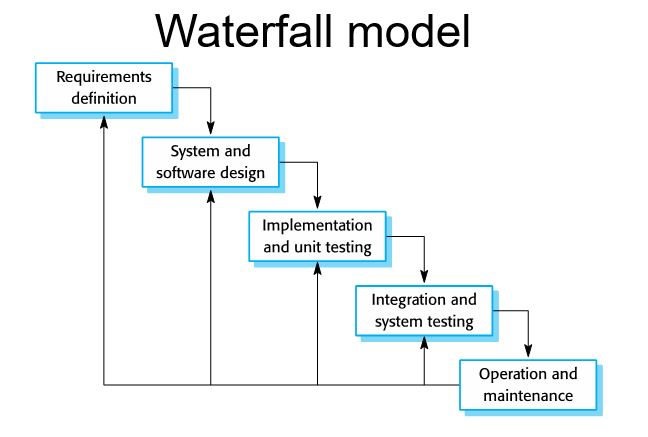
Requirements analysis and definition
The process of establishing what services are required and the constraints on the system's operation and development.
Requirements Engineering Process, which includes feasibility study, requirements elicitation and analysis, requirements specification, requirements validation. 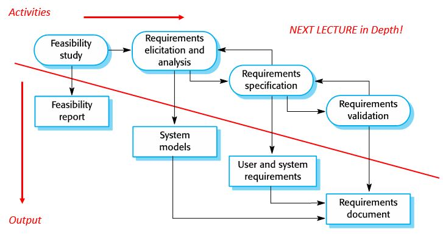
System and software design a structure that realises the specification
Architectural design
Abstract specification
Interface design
Component design
Data structure design
Algorithm design
And so on... 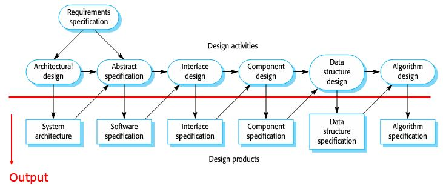
Implementation and unit testing
Have to already produce executable code.
Unit testing individual components for functions, classes or programs independently.
Components may be functions or objects or coherent groupings of these entities.
Integration and system testing
System testing: Testing the system as a while. Testing of emergent properties is particularly important.
Acceptance testing: Testing with customer data to check that the system meets the customer's needs.
Operation and maintenance to keep the system going.
Problems of Waterfall Model
One phase has to be complete before moving on to the next phase.
Inflexible partitioning of the project into distinct stages makes it difficult to respond to changing customer requirements. Therefore this model is only appropriate when the requirements are well understood and the changing will be fairly limited during the design process.
But only a few business systems have stable requirements.
2.2 – Evolutionary Development
Specification, development and validation is all concurrently ongoing.
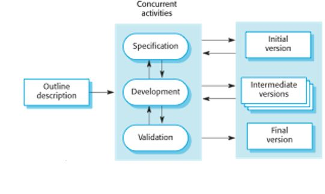
Exploratory development: To work with customers and to evolve a final system from an initial outline specification. Start with well understood requirements and add new features as proposed by the customer.
Throw-away prototyping: To understand the system requirements. So should start with poorly understood requirements to clarify what is really needed.
Problems with Evolutionary Development
Lack of process visibility
Systems are often poorly structured
Special skills such as in languages for rapid prototyping may be required
May not be applicable for small or medium-sized interactive systems
May not be applicable for parts of large systems like the user interface
May not be applicable for short-lifetime systems
2.3 – Component-based Software Engineering
This is based on systematic reuse where systems are integrated from existing components or Commercial-off-the-shelf (COTS) systems.
Process stages include component analysis, requirement modification, system design with reuse, and development and integration. Reuse-oriented development 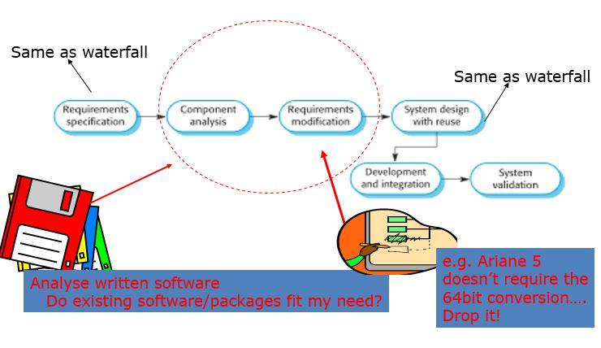
Process Iteration
System requirements ALWAYS evolve in the course of a project, so process iteration where earlier stages are reworked is always part of the process for large systems. Iterations can be applied to any of the generic process models.
2.4 – Incremental Delivery
Rather than deliver the system as a single delivery, the development and delivery is broken down into increments with each increment delivering part of the required functionality.
User requirements are prioritised and the highest priority requirements are included in early increments. Once the development of an increment is started, the requirements are frozen through for later increments to evolve.
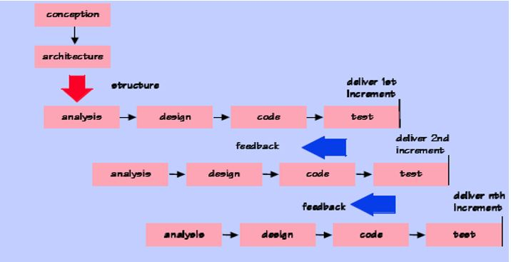
The advantage of this development style
Early increments act as a prototype to help elicit requirements for later increments.
Lower risk of overall project failure.
The highest priority system services tend to receive the most testing.
Customer value can be delivered with each increment so system functionality is available earlier.
2.5 – Spiral Development
The process is represented as a spiral rather than as a sequence of activities with backtracking. Each loo[ in the spiral represents a phase in the process. There are no fixed phases such as specification or design – loops in the spiral are chosen depending on what is required. Risks are explicitly assessed and resolved throughout the process.
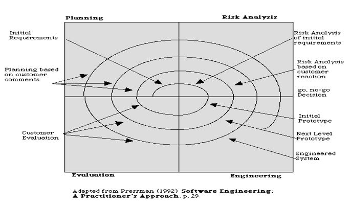
1.6 – Rational Unified Process (RUP)
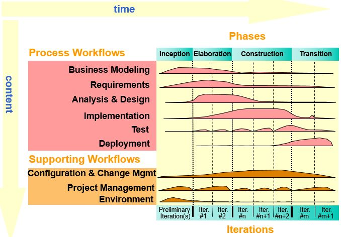
There are four RUP phases
Inception: Establish the business case for the system.
Formulating the scope of the project.
Planning and preparing the business case.
Synthesizing a candidate architecture.
Preparing the environment for the project.
Elaboration: Develop an understanding of the problem domain and the system architecture.
Defining, validating the baseline architecture.
Refining the vision.
Creating detail of iteration plans for the construction phase.
Refining the development case and putting in [lace the development environment.
Refining the architecture and selecting components.
Construction: System design, programming and testing.
Resource management, control and process optimisation.
Complete component development and testing against the defined evaluation criteria.
Assessment of product releases against acceptance criteria for the vision.
Transition: Deploy the system in its operating environment.
Executing deployment plans.
Finalising end-user support material.
Testing the deliverable product at the development site.
Creating a product release and getting user feedback.
Fine-tuning the product based on feedback.
Making the product available to end-users.
3 – Requirements Engineering (RE)
Requirements form the basis for Project Planning, Risk Management, Acceptance Testing and Change Control.
Most project's critical issues are in the requirements area. Major gaps in Requirements tend to be critical to a project success. Producing a good set of requirements is likely the most difficult job in software system development.
Recurring problems
Lack of functional requirements by either no requirements have been written, usage scenario not understood and documented, functionality of the system incomplete, customer not known and not contacted, or no acceptance criteria for the system.
Lack of performance and capacity requirements: Number and/or types of users undocumented, transaction and data volumes unknown.
Lack of operations, administration and management requirements.
Good requirements describe what the system is supposed to do, not how the system is supposed to do it. Remember the 5W's and one H.
Requirements are not a description of how the system provides the needed functionality. Requirements should not specify technology or implementation except where those items are customer constraints. Requirements should not contain assumptions, should not be indecisive with words like "would", "could", "flexible" in the document. The item will or will not be in the system. Requirement should not be inconsistent or conflicting too.
Requirements are description of what the entire system is supposed to do:
Reflective of customer need
Constraints imposed by the customer
Constraints imposed by business and marketing needs
Unambiguous (clear and concise)
Complete
Prioritised
Traceable, meaning able to be followed
Implementable within project constraints like schedule and budget
Formally accepted by the customer, systems engineering and development, system test, and under change control
Requirements are sometimes referenced for contacts, and also sometimes considered to be contract between systems engineering and development.
Customer and end-user are not always the same person. The end-user is the person who interacts with the system to get the job done, while the customer typically pays for the system. They may have similar or conflicting objectives. Sometimes delighting your end-user delights the customer, but remember that the customer pays for the job. So it is very important to get the customer involved in the initial phase of RE, if at all possible.
3.1 – Software Development Lifecycle (SDLC)
We have the V Model: If problems are found during Verification or Validation phase, the LHS of the V is re-executed to fix the problem.
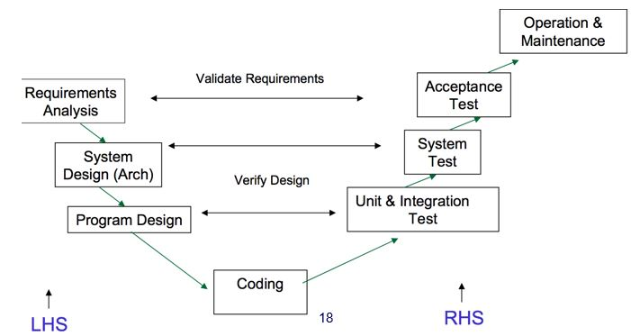
Prototyping allows all or part of the system to be constructed quickly in the hopes of clarifying and understanding issues. Iterate requirements and design to ensure common understanding.
Role of requirements engineering
Requirements influence the whole development from the start to end. Testing is with respect to the requirements. A system is accepted against Stakeholder's requirements during Acceptance Test Phase as shown in the image below.
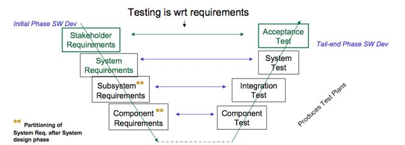
RE provides communication amongst projects. Requirements traceability refers to the ability to understand how high-level requirements (goals, objectives etc) are transformed into low-level requirements (mapping between layers of information: one-to-many usually). It is the ability to assess impact changes introduced at various phases of development lifecycle, and the ability to track progress. Stakeholders req. met by system req → partitioned into subsystem req → implemented as components
Traceability is the use of requirements management tools to link requirements statements in on layer with statement in another.
Main requirements activities include
Requirements inception
Requirements analysis
Requirements specification
Requirements verification and validation
Requirements management
Requirements documents
4 – Systems
A system is an organised or complex whole: an assemblage or combination of things or parts forming a complex or unitary whole. It is also a set of interrelated elements.
If the elements of a system are of a reasonable degree of complexity, which made them systems, then we call them sub-systems.
The environment of a system is the set of elements which are NOT part of the system, but a change in any of which can produce a change in the state of the system.
4.1 – Critical Systems
Critical system is a system where failure can lead to high economic loss, physical damage, or threats ot life. There are three critical systems:
Safety-critical
Failure results in loss of life, injury or damage to the environment.
E.g. Chemical plant protection system
Mission-critical
Failure results in failure of some goal-directed activity.
E.g. Spacecraft navigation system
Business-critical
Failure results in high economic loss.
E.g. Customer accounting system in a bank
It is usually the case that the most important system property is the dependability of the system. The dependability of a system reflects the user's degree of trust in that system. It reflects the extent of the user's confidence that it will operate as users expect and that it will not fail in normal use.
Systems that are not dependable (unreliable, unsafe, insecure) may be rejected by their users. The cost of critical system failure may be very high such that development method may be used for other types of system.
Socio-technical in an organisational development is an approach to complex organisational work design that recognises the interaction between people and technology in workplaces.
Hardware failure
Design and manufacturing errors.
Components have reached the end of their natural life.
Software failure
Errors in its specification, design or implementation.
Operational failure
Human operators make mistakes.
4.2 – Dependability
Dependability of a system equates to its trustworthiness. The principal dimensions of dependability are:
Availability
Probability that the system will be available to deliver services when requested.
Reliability
Probability that system services will be delivered as specified.
Safety
The ability of the system to operate without catastrophic failure.
Security
The ability of the system to protect itself against accidental or deliberate intrusion.
Repairability
Reflects the extent to which the system can be repaired in the event of a failure.
Maintainability
Reflects the extent to which the system can be adapted to new requirements.
Survivability
Reflects the extent to which the system can deliver services whilst under hostile attack.
Error tolerance
Reflects the extent to which the user-input errors can be avoided and tolerated.
Untrustworthy systems may cause loss of valuable information. It may be rejected by their users and failures cost very high.
There will be trade-offs between performance and dependability.
The costs tend to increase exponentially as increasing levels of dependability are required. This is because of:
Use of more expensive development techniques
Increased testing and system validation
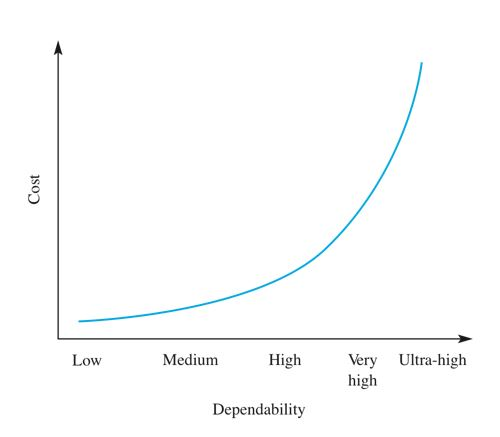
Safety is the system's ability to operate without danger of causing human injury or death and without damage to the system's environment.
Security of a system is the system's ability to protect itself from accidental or deliberate external attack. It is an essential pre-requisite for availability, reliability and safety.
Damages that can be done from insecure systems:
Denial of service (DOS)
Corruption of programs or data
Disclosure of confidential information
4.3 – Faults and Failures
There are some terminologies related to reliability:
System Failure
An event that occurs at some point in time when the system does not deliver a service as expected by its users.
System Error
An errorneous system state that can lead to system behavior that is unexpected by system users.
System Fault
A characteristic of a software system that can lead to a system error. E.g. failure to initialise a variable leading to null pointers.
Human Error
Human behaviour that results in the introduction of faults into a system.
Failures are usually a result of system errors that are derived from the faults in the system. Faults do not necessarily result in system errors. Errors do not necessarily lead to system failures.
Fault avoidance development techniques are used to minimise the possibility of mistakes or trap mistakes before they result in faults.
Fault detection and removal verification and validation techniques are used to detect errors before the system goes into service.
Fault tolerance runtime techniques are used to ensure that system faults do not result in system errors which do not lead to system failures.
5 – Rapid and Extreme Programming
5.1 – Rapid Software Development (RSD)
RSD is due to the fact that business environments always change, so the business have to respond to new opportunities and competition. This is normally used for small and medium sized systems.
Characteristics
Processes of specification, design and implementation are concurrent.
System is developed in a series of increments.
End-users evaluate each increment and make proposals for later increments.
Things may easily go wrong so best suited for experienced and skillful development teams.
Waterfall model is impractical here.
Iterative development process
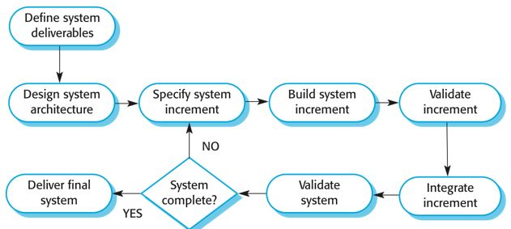
5.2 – Agile Methods
Focus on the code rather than design
Iterative approach
Intended to deliver working software quickly and evolve quickly
Agile methods are best suited to small or medium sized business systems.
Principles of Agile Methods
Customer involvement
Customers are to provide and prioritise new requirements and evaluate iterations.
Incremental delivery
Software is developed in increments.
People not Process
Team members should be allowed to develop their own ways of working.
Embrace Change
Design the system to accommodate constant changes.
Maintain Simplicity
Actively work to eliminate complexity from the system.
Problems with Agile Method
Can be difficult to keep the interest of involved customers.
Team members not suited for the method.
Prioritising changes can be difficult where there are multiple stakeholders.
Maintaining simplicity requires extra work.
Contracts
Extreme Programming (XP)
This is an agile method that takes an 'extreme' approach to iterative development.
New versions may be built several times per day.
Increments are delivered to customers every 2 weeks.
Build is only accepted if tests run successfully.
Five Values of XP
Communication
Nothing can be done well without communicating.
Simplicity
Do the simplest thing that could possibly work.
Feedback
Put valuable requirements into production as early as possible.
Courage
Do the right thing! Throw away code that is no longer needed.
Respect
Team members must respect other's work.
The XP Release Cycle
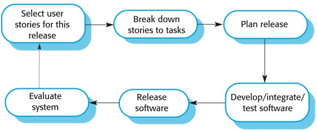
XP Practices
Incremental Planning
Requirements are recorded on story cards that focuses on user needs.
Stories should be prioritised and chosen by the customer.
Break down each story into tasks.
Each task has estimates of schedule and cost.
Small Releases
Focus on releasing minimal functionality.
Each increment adds more functionality.
Simple Design
Design just enough to meet requirements.
Even though it might lead to poor design and multiple refactorings.
Test-first Development
Automated test framework is used to write tests for a new piece of functionality before the functionality itself is implemented.
This is to clarify the requirements.
Tests are written as programs rather than data.
Tests are run when new functionality is added to ensure the update doesn't introduce errors.
Refactoring
Refactor continuously as soon as an improvement is found.
This is to keep code simple and maintainable.
Pair Programming
Developers work in pairs.
Develop common ownership and spreads knowledge.
Serves as an informal review process.
Encourages refactoring.
Collective Ownership
Everybody works on everything. No islands of expertise.
Continuous Integration
Work is integrated to the system as soon as it is finished.
All of the unit tests in the system must pass.
Sustainable Pace
Large amounts of overtime are not considered acceptable.
This reduces the net productivity of code.
On-site customer
End-users and customers are members of the development team.
Critiques of XP
Code-centered rather than design-centered, bad for large systems.
Not producing readable code.
Lack of structured review process.
Quality through testing.
Limited to a narrow segment of software work.
Limited management support.
Lack of transition support.
User Stories and Use Cases
User Story
Use Case
Small scale and easy-to-use presentation of information.
Describes process and steps in detail.
Formulated in everyday language of the user, no technical words.
Can use technical words.
Can be accompanied by Acceptance Testing procedures.
Can be delivered in a stand-alone document.
For customers
For developers
5.3 – Rapid Application Development (RAD)
This development includes Visual Development and COTS.
Designed to develop data-intensive business applications.
Rely on programming and presenting information from a database.
Using special tools and programming languages.
RAD environments include support for interface generation interactively: form definition using drag and drop techniques; form linking and form verification.
Visual Programming
Scripting languages such as Visual Basic. Prototype is created from an interface.
An example would be like below
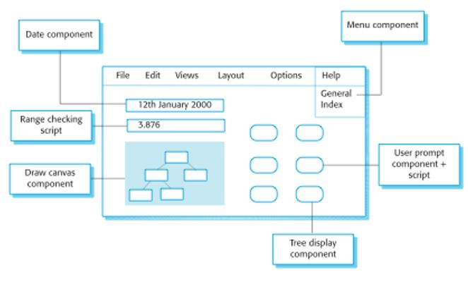
Problems with Visual Development
Difficult to coordinate team-based development.
No explicit system architecture.
Can have maintainability problems.
Maintenance has to be done through original environment.
Hard to integrate with other systems.
COTS Reuse
As mentioned before in here, COTS refers to already available applications. Configure and link existing off the shelf systems for an effective approach to rapid development.
Some application prototypes can be created by developing a compound document. This document has active elements like a spreadsheet that allows user computations. Each active elements has an associated application which is invoked when that element is selected. The document itself is the integrator for different applications.
6 – Inception Phase
The Inception phase focuses on the business process modeling, requirements capture, and the start of analysis.
Analysis has three parts:
Business Modelling
Requirements Analysis
System Analysis
6.1 – Business Process Modelling
Build a business process map
Develop business scenarios
Derive business workflows
Produce business object models
Business Process Map
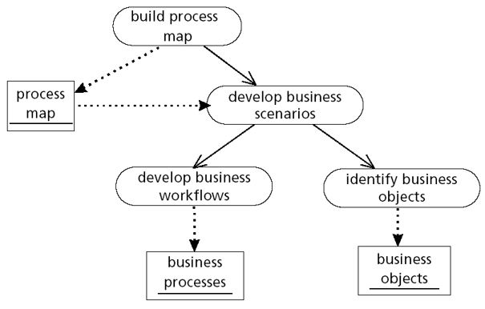
Business Scenario Analysis
Forms the basis of analysis process:
Business analysis
Use case analysis
There are four parts to analysis is to describe and identify:
Scenarios – described by primary and alternative paths
Primary Paths
Alternative Paths
Exceptions – when alternative paths fails
The 80/20 principle states that 80% of effort goes into 20% of activity.
6.2 – Activity Diagrams
A branch of UML diagrams, made by merging scenario analysis' primary and alternative paths. Used to model business processes.
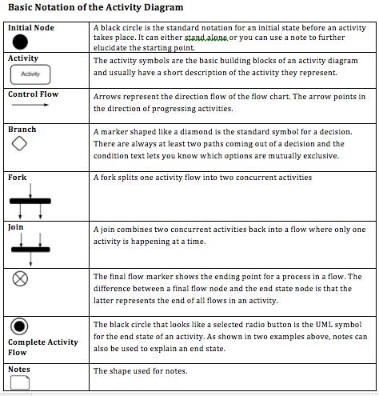
Apart from these we also have swimlanes which are useful to separate actors.
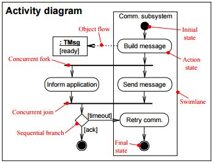
Some examples:
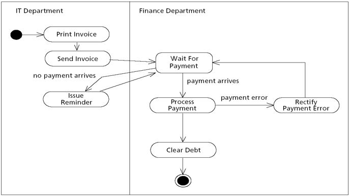
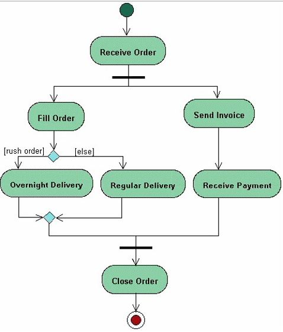
Stakeholder Involvement
Building business processes requires many discussions with clients and stakeholders.
Record process in a Process Catalogue.
Goals of the process
Necessary preconditions before the process can run
Criticality of the process
Business actors involved in the process
7 – Requirements Documentation
A requirement may be the basis for a bid for a contract, or it may be the basis for the contract itself, or both.
7.1 – Types of Requirements
User
Statements in natural language and diagrams of the services the system provides and its constraints.
Should describe functional and non-functional requirements.
Written for clients without technical knowledge.
System
Descriptions of the system's functions, services and operational constraints.
Defines what should be implemented.
Part of the contract.
7.2 – Functional and Non-Functional Requirements
Brief definition of these two: Functional requirements describe what the system should do while non-functional requirements describe how the system works
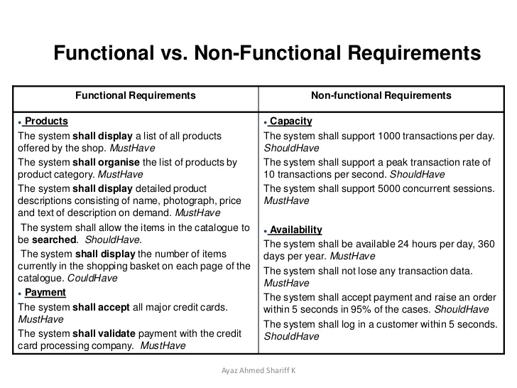
Requirements have to be written properly without any ambiguity or developers may interpret it differently than what is asked for.
Requirements have to be both complete and consistent:
Complete
They should include descriptions of all facilities required.
Consistent
There should be no conflicts or contradictions in the descriptions of the system facilities.
Types of Non-functional Requirements
Product requirements
Specify the way the delivered product must behave.
Performance, Reliability, Availability, etc.
Organisational requirements
Consequence of organisational policies and procedures
Process standards used, implementation requirements, etc.
External requirements
Factors which are external to the system and its development process
Legislative requirements, etc.
A requirement is verifiable if it is possible to create and run a test of the final system that clearly demonstrates the requirement has been met.
Domain requirements are derived from the application domain and describe system characteristics and features that reflect the domain.
Guidelines for Writing Requirements
Create a standard format and use it for all requirements. Use language in a constant way. Use shall for mandatory requirements, should for desirable requirements. Avoid computing jargon.
Problems with Natural Language
Ambiguous – Different people may interpret it differently.
Too flexible – Many ways to describe the same thing.
Lack of modularisation – NL Structures are inadequate to structure system requirements.
Alternatives to NL specification
Notation
Description
Structured natural language
Depends on defining standard forms to express the specification.
Design description languages
Uses a language like a programming language with more abstract features and models to specify the requirements .
Graphical notations
Graphics supplemented with text annotations. This includes use-case descriptions and sequence diagrams.
Mathematical specifications
Languages based on math concepts like finite state machines.
7.3 – Sequence Diagrams
Shows the sequence of events that take place during some user interaction with a system.
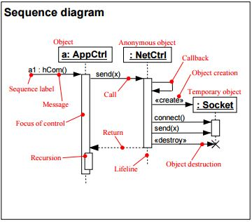
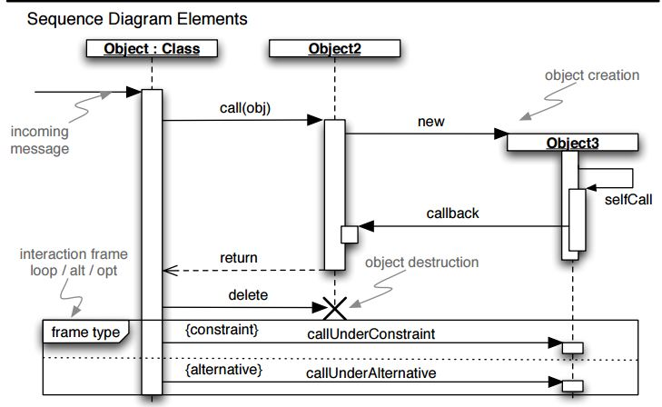
Synchronous
Method call and wait for return.
Represented as full solid arrow.
Dashed arrow indicated return.
Asynchronous
Method call without return.
Represented as arrow without solid head.
About of Requirements Documents
Users
System Customers
Software Managers
System Engineers
System Test Engineers
System Maintenance Engineers
IEEE Requirements Standard
A useful starting point for defining more detailed specific requirements standards.
Introduction
General Description
Specific Requirements
Appendix
Index
8 – Requirements Capture
8.1 – About Requirements Capture
Involves analysts working with clients to find out about the application domain, services that the system should provide and the system's operational constraints. May involve stakeholders.
Problems with Requirements
Stakeholders don't know what they really want.
Stakeholders express requirements in their own terms.
Different stakeholders may have conflicting requirements.
Organisational and political factors may influence the system requirements.
Requirements change during the analysis process.
Process Activities
Requirements Discovery
Interacting with stakeholders to discover their requirements.
Requirements Classification and Organisation
Group related requirements and organises them into coherent clusters.
Prioritisation and Negotiation
Prioritising requirements and resolving requirement conflicts.
Requirements Documentation
Requirements are documented and input into next iteration.
8.2 – Viewpoints
A way of structuring the requirements to represent the perspectives of different stakeholders. Stakeholders may be classified under different viewpoints.
8.3 – Fact-Finding Techniques
Technique
Definition
Pros
Cons
Background Reading
Company reports, organisation charts, policy manuals of existing systems.
Helps understand the organisation and prepare for other types of fact finding.
Written documents often do not match reality; out of date for example.
Interviewing
A structured meeting between the analyst and a stakeholder.
Allows analyst to adapt to what the interviewee says.
Analyst can probe in greater depth.
Interview can be terminated early if interviewee has nothing to say.
Interviews are time-consuming and therefore costly.
Results have to be transcribed or written up after the interview.
Can be subject to bias if the analyst has a closed mind.
Different interviewees may provide conflicting information.
Observation
Allows the analyst to identify social and organisational factors.
Provides first-hand experience of how the current system operates.
Data collected in real time hence having high level of validity.
Baseline performance data can be collected.
Can be used to verify other sources of information.
Most people don't like being observed and may behave differently.
Required skilled and trained observer to be effective.
Can give rise to logistical problems.
Ethical issues can arise if sensitive information is handled.
Document Sampling
Collect copies of blank and completed documents. Analyse the document to determine inputs and outputs for each activity.
Can be used to gather quantitative data. Also used to estimate error rates.
Limited use if the system is going to change significantly.
Questionnaires
Series of written questions with limited range of possible answers.
Economical method of gathering data from a large number of people.
Results can be analysed easily.
Good questionnaires are difficult to construct.
May be necessary to follow up the questionnaire by an interview.
May suffer from low response rates.
8.4 – Requirements Checking
Validity
Consistency
Completeness
Realism
Verifiability
8.5 – Requirements Validation
Requirements Reviews
Systematic manual analysis of the requirements.
Prototyping
Using an executable model of the system to check requirements.
Test-case generation
Developing tests for requirements to check testability.